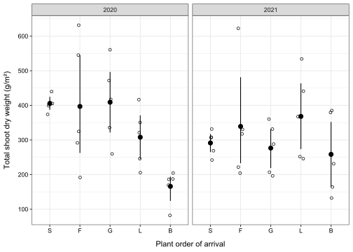
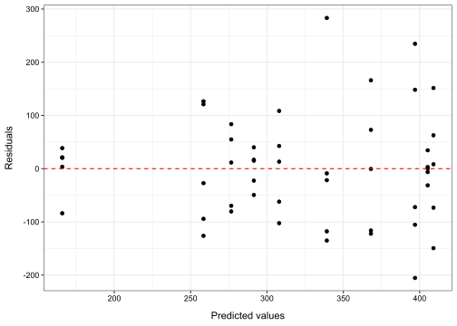
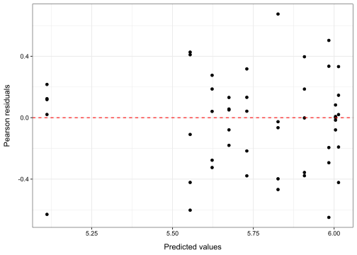
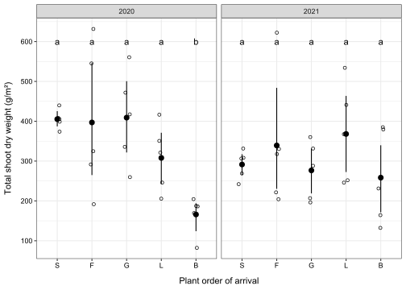
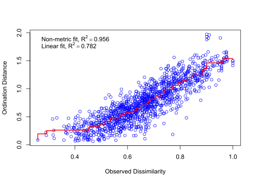
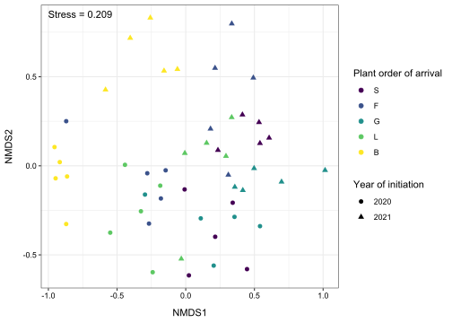

install.packages("inborutils",
repos = c(inbo = "https://inbo.r-universe.dev",
CRAN = "https://cloud.r-project.org"))Tutorial 5: Data analysis in R
Benjamin Delory ![]()
About this tutorial
Welcome to this tutorial on data analysis in R!
In this tutorial, our goal is to review some of the R functions you will need to analyse the data you have collected in the field and answer your research questions. For this tutorial, we strongly recommend that you reflect on what you have learned in the Statistics GSS course during Period 3. The Statistics GSS course taught you many useful tools for data analysis. Now it’s time to put them into practice on a real ecological data set. For this tutorial, you will be using the same POEM data as in the tutorial on data wrangling. If you don’t remember what these data are, please refer to the first sections of the first tutorial on data wrangling.
Let’s get started!
Importing POEM data
The first thing to do after opening RStudio is to import the POEM data. This is exactly the same as what we already did in the first tutorial. Try writing the code yourself this time (i.e. without looking too quickly at the solution)!
Download the POEM data from Zenodo
The POEM data that will be used in this tutorial are available on a Zenodo repository. You can download the data manually, but you can also do it using an R function called download_zenodo(). Let’s give it a try.
First, install the inborutils R package using the following code:
You can now download the data used in this tutorial using download_zenodo().
Code
inborutils::download_zenodo(doi="10.5281/zenodo.10119982",
quiet=TRUE)By default, the data will be downloaded as a zip file and will be stored in your working directory. If you do not know what is your working directory, run getwd() in your R console. Let’s extract (or unzip) the files we have just downloaded from Zenodo and let’s store these files in a new folder called “Data_POEM”:
Code
unzip(zipfile = "Data_POEM_Paper1_Alonso-Crespo_et_al_2024-v1.0.zip",
exdir = "Data_POEM")Load R packages
Most of the functions we need for the rest of this tutorial are available with base R and in R packages from the tidyverse collection. We will also need the read_excel() function from the readxl package and the kable() function from the knitr package. We will also need functions from the vegan, car, emmeans, and viridis R packages later in this tutorial. If they are not yet installed in your library, install it using install.packages().
You can load all the packages required for this tutorial using library().
Code
library(tidyverse)
library(readxl)
library(knitr)
library(vegan)
library(car)
library(emmeans)
library(viridis)Import data into R
In the POEM project, raw biomass data (measured at the species level) are stored in different folders for the experiment started in 2020 (POEM2020) and the experiment started in 2021 (POEM2021). For each experiment, there is one data file for each growing season. As the data is stored in Excel files (.xlsx), we can use read_excel() to import our data into R. For now, we will simply store each set of data in separate R objects.
Code
#Import data from the first experiment (POEM2020)
poem2020_year1 <- read_excel("Data_POEM/POEMexperiment-Data_POEM_Paper1_Alonso-Crespo_et_al_2024-0c2abb7/Data/POEM2020/Data_Biomass_POEM2020_2020-07.xlsx")
poem2020_year2 <- read_excel("Data_POEM/POEMexperiment-Data_POEM_Paper1_Alonso-Crespo_et_al_2024-0c2abb7/Data/POEM2020/Data_Biomass_POEM2020_2021-06.xlsx")
poem2020_year3 <- read_excel("Data_POEM/POEMexperiment-Data_POEM_Paper1_Alonso-Crespo_et_al_2024-0c2abb7/Data/POEM2020/Data_Biomass_POEM2020_2022-06.xlsx")
#Import data from the second experiment (POEM2021)
poem2021_year1 <- read_excel("Data_POEM/POEMexperiment-Data_POEM_Paper1_Alonso-Crespo_et_al_2024-0c2abb7/Data/POEM2021/Data_Biomass_POEM2021_2021-07.xlsx")
poem2021_year2 <- read_excel("Data_POEM/POEMexperiment-Data_POEM_Paper1_Alonso-Crespo_et_al_2024-0c2abb7/Data/POEM2021/Data_Biomass_POEM2021_2022-06.xlsx")
poem2021_year3 <- read_excel("Data_POEM/POEMexperiment-Data_POEM_Paper1_Alonso-Crespo_et_al_2024-0c2abb7/Data/POEM2021/Data_Biomass_POEM2021_2023-06.xlsx")In RStudio, you can see how each data frame looks like using View().
Code
View(poem2021_year1)You can see that each dataset consists of a number of observations (rows) of 6 variables (columns). These variables are:
- Year: the year of initiation of each experiment
- Harvest: the date at which biomass data were collected (YYYY-MM)
- Plot: the plot identification number (plot number - arrival order/replicate)
- Quadrat: the quadrat identification number (plant biomass was collected in 2 or 4 quadrats per plot)
- Species: the plant species name
- SDW_g: the shoot dry weight in grams
To enable data exploration and analysis, we now need to combine these different datasets, so that all the data is stored in the same R object. You can do this using rbind().
Code
poem_data <- rbind(poem2020_year1,
poem2020_year2,
poem2020_year3,
poem2021_year1,
poem2021_year2,
poem2021_year3)Organise POEM data
Write R code to reorganise the data so that we can analyse them. Make sure to do the following:
Create new columns based on the information contained in the Plot column. This can be done easily using
separate_wider_delim()andseparate_wider_position(). Make sure to add the following three columns to the dataset:- PlotID (the plot number)
- Arrival (the order of arrival treatment: S, F, G, L, B)
- Replicate (the replicate number)
Make sure that PlotID and Replicate are stored as numerical variables. You can do this by combining
mutate()withas.numeric().Finally, rename the column storing plant biomass values (SDW_g). Name it “Biomass”. You can do this using
rename().
Code
poem_data <- poem_data |>
separate_wider_delim(cols = Plot,
delim="-",
names=c("PlotID", "Treatment"),
cols_remove=TRUE) |>
separate_wider_position(cols = Treatment,
width=c(Arrival=1, Replicate=1),
cols_remove=TRUE) |>
mutate(PlotID=as.numeric(PlotID),
Replicate=as.numeric(Replicate)) |>
rename(Biomass=SDW_g)Let’s take a quick look at the first ten rows of our dataset using head(). We can also use kable() in the knitr package to produce a nice looking table in your R console.
Code
kable(head(poem_data, n = 10))| Year | Harvest | PlotID | Arrival | Replicate | Quadrat | Species | Biomass |
|---|---|---|---|---|---|---|---|
| 2020 | 2020-07 | 101 | F | 1 | 1 | Agrostis capillaris | 0.0000 |
| 2020 | 2020-07 | 101 | F | 1 | 1 | Anchusa arvensis | 0.0000 |
| 2020 | 2020-07 | 101 | F | 1 | 1 | Anthemis arvensis | 10.2100 |
| 2020 | 2020-07 | 101 | F | 1 | 1 | Anthoxanthum odoratum | 0.0000 |
| 2020 | 2020-07 | 101 | F | 1 | 1 | Arabidopsis thaliana | 0.0000 |
| 2020 | 2020-07 | 101 | F | 1 | 1 | Bromus hordeaceus | 0.0000 |
| 2020 | 2020-07 | 101 | F | 1 | 1 | Capsella bursa-pastoris | 0.0000 |
| 2020 | 2020-07 | 101 | F | 1 | 1 | Chenopodium album | 0.7658 |
| 2020 | 2020-07 | 101 | F | 1 | 1 | Crepis tectorum | 0.0000 |
| 2020 | 2020-07 | 101 | F | 1 | 1 | Dianthus deltoides | 0.0000 |
Exercise 1: Do plant order of arrival and year of initiation of an experiment affect the total aboveground biomass production of plant communities?
Step 1: Calculate the total biomass production in each plot
Before starting analysing our data, we must first calculate the total biomass production of each plant community at each harvest date. This can be done by summing the biomass value of all species collected in a plot at a given harvest date. Use what you learned in the data wrangling tutorial to write a piece of R code that does that. When writing your code, remember the following:
Store the dataset in a new object called
poem_data_biomass.Do not forget to standardise biomass data in g/m². Each quadrat has a surface area of 0.1 m². Use
mutate()to add a new column called “Std_biomass” to the dataset.Depending on the harvest date, all plant species located within 2 or 4 randomly positioned quadrats were collected in each plot. To obtain a biomass value per species and per plot, it is first necessary to calculate the average biomass value for each species in a plot at each harvest date (i.e., across quadrats). Use
group_by()andsummarise()to do that.Once you have calculated the average biomass value for each species in a plot, use
group_by()andsummarise()again to calculate the total aboveground biomass in each plot by adding up the yield (in g/m²) of all species in a plot.Only keep the data for the second harvest date of each sub-experiment (2021-06 for the experiment initiated in 2020, 2022-06 for the experiment initiated in 2021).
Code
poem_data_biomass <- poem_data |>
mutate(Std_biomass=Biomass/0.1, #Convert to g/m²
.after = "Biomass") |> #Specify that we want this new column to be after the Biomass column
group_by(Year, Harvest, PlotID, Arrival, Species) |> #Define grouping factors in your data
summarise(Std_biomass=mean(Std_biomass)) |> #Calculates the average productivity of each species in a plot
group_by(Year, Harvest, PlotID, Arrival) |> #Redefine groups (interested in summing biomass values across species)
summarise(Total_biomass=sum(Std_biomass)) |> #Calculate total biomass production in each plot
filter((Year == 2020 & Harvest == "2021-06")|(Year == 2021 & Harvest == "2022-06"))Let’s take a quick look at the first ten rows of our new dataset using head().
Code
kable(head(poem_data_biomass, n = 10))| Year | Harvest | PlotID | Arrival | Total_biomass |
|---|---|---|---|---|
| 2020 | 2021-06 | 101 | F | 631.5848 |
| 2020 | 2021-06 | 102 | S | 373.8803 |
| 2020 | 2021-06 | 103 | L | 416.4602 |
| 2020 | 2021-06 | 104 | L | 350.6379 |
| 2020 | 2021-06 | 105 | G | 335.7337 |
| 2020 | 2021-06 | 106 | G | 259.7065 |
| 2020 | 2021-06 | 107 | S | 439.7880 |
| 2020 | 2021-06 | 108 | B | 204.5267 |
| 2020 | 2021-06 | 109 | S | 398.8852 |
| 2020 | 2021-06 | 110 | G | 471.7547 |
Step 2: Visualise raw data
Before fitting a statistical model to our data, let’s first create a plot to help us answer our research question: Do plant order of arrival and year of initiation of an experiment affect the total aboveground biomass production of plant communities?
This research question gives us important information about what needs to be represented. The first half of the question tells us that our graph should present results for all possible combinations of plant arrival order (S, F, G, L, B) and year of initiation (2020 and 2021). These are the fixed factors of the experiment. We can make sure that these columns are correctly interpreted as factors by using factor(). It may also be a good idea to reorder factor levels in a meaningful way (S, F, G, L, B). The second half of the research question tells us that we need to show the differences in total aboveground biomass production between all possible treatment combinations. This is the response variable of our experiment.
Using what you have learned in the previous tutorials, create a high-quality figure that answers the research question. Feel free to personalise your plot in any way you think best communicates the results (you do not necessarily have to produce the same plot as below). What can you already notice from this graph? Does it look like ANOVA (ANalysis Of VAriance)) assumptions are met?
Code
poem_data_biomass$Year <- factor(poem_data_biomass$Year)
poem_data_biomass$Arrival <- factor(poem_data_biomass$Arrival,
levels=c("S", "F", "G", "L", "B"))
plot <- poem_data_biomass |>
ggplot(aes(x=Arrival,
y=Total_biomass))+
facet_grid(~Year)+
geom_jitter(height = 0,
width=0.1,
shape=1)+
stat_summary(fun.data = "mean_cl_boot")+
theme_bw()+
xlab("Plant order of arrival")+
ylab("Total shoot dry weight (g/m²)")+
theme(axis.title.x = element_text(margin = margin(t=10)),
axis.title.y = element_text(margin = margin(r=10)),
axis.text = element_text(colour="black"))+
scale_y_continuous(breaks=seq(from = 100,
to = 600,
by = 100))Code
plot
Step 3: Fit a model
Let’s fit a statistical model to study the relationship between our response variable of interest (Total_biomass) and our two experimental factors (Year and Arrival). There are different ways to do this in R. First, let’s check whether a simple linear regression model can correctly model our data. We will use the lm() function to fit this linear model (this will give us the same results as the aov() function). Note that each group being compared has 5 independent observations, which is not sufficient to test the assumption that the data are normally distributed at each combination of factor levels.
The syntax to fit a simple linear regression model with two predictor variables in R is as follows:
model <- lm(Response ~ Predictor1*Predictor2, data)
The asterisks (*) means that we want to take the interaction between predictor variables into account (you then assume that Predictor1 and Predictor2 have non-additive effects on your response variable). Using a plus sign (+) instead of an asterisks would fit a model without considering an interaction between predictors (in that case, you then assume that Predictor1 and Predictor2 have additive effects on your response variable).
Code
#Fit simple linear regression model
model1 <- lm(Total_biomass ~ Year*Arrival,
data = poem_data_biomass)Before checking model results, let’s first make sure that model assumptions are met. We can check for homoscedasticity by plotting model residuals (i.e., the difference between model predictions and observations) against fitted values (i.e., model predictions). This is called a residual plot. Fitted values can be calculated using predict(). Residuals can be calculated using residuals(). Try to create such a plot using what you have learned in previous tutorials. Do you notice any pattern in this residual plot?
Code
plot <- data.frame(predicted = predict(model1),
residuals = residuals(model1)) |>
ggplot(aes(x=predicted,
y=residuals))+
geom_point()+
geom_hline(yintercept = 0,
colour = "red",
linetype = 2)+
theme_bw()+
xlab("Predicted values")+
ylab("Residuals")+
theme(axis.title.x = element_text(margin = margin(t=10)),
axis.title.y = element_text(margin = margin(r=10)),
axis.text = element_text(colour="black"))Code
plot
It seems that there is a strong mean - variance relationship in our data (heteroscedasticity), which means that the model we just fitted is not the best option. A better approach is to switch to a generalised linear model (also referred to as GLM). Generalised linear models can be fitted using the glm() function in the stats package. The syntax is exactly the same as for the lm() function, but there is an extra argument to specify: family. The family argument allows you to describe the error distribution and the link function to be used in the model.
Relationship between
lm() and glm()
A simple linear regression model (lm()) is a special case of a gaussian generalised linear model with an identity link. This means that
lm(Response ~ Predictor1*Predictor2, data)
and
glm(Response ~ Predictor1*Predictor2, data, family=gaussian(link="identity")
produce the same results.
Instead of using a gaussian distribution, a gamma distribution can be used for a response variable that is continuous and strictly positive. Negative values and zeros are not allowed with a gamma distribution. This distribution is useful to model variables such as biomass, length, etc. Using a log link function will also help deal with heteroscedasticity. This can be done by writing family=Gamma(link="log") in glm().
Let’s fit a new model (this time a GLM) to our data.
Code
#Fit simple linear regression model
model2 <- glm(Total_biomass ~ Year*Arrival,
data = poem_data_biomass,
family = Gamma(link="log"))Before checking model results, let’s first create a residual plot. What do you notice? What’s new in this residual plot?
Code
plot <- data.frame(predicted = predict(model2),
residuals = residuals(model2)) |>
ggplot(aes(x=predicted,
y=residuals))+
geom_point()+
geom_hline(yintercept = 0,
colour = "red",
linetype = 2)+
theme_bw()+
xlab("Predicted values")+
ylab("Pearson residuals")+
theme(axis.title.x = element_text(margin = margin(t=10)),
axis.title.y = element_text(margin = margin(r=10)),
axis.text = element_text(colour="black"))Code
plot
Let’s now take a look at model outputs. You can do this using summary(). This output contains a wealth of useful information. The coefficient table gives you the coefficients of the model. When looking at the results of the statistical tests, it seems that only three to four coefficients in the equation above can be considered significantly different from zero (marked with a dot or an asterisks).
Code
output <- summary(model2)Code
output
Call:
glm(formula = Total_biomass ~ Year * Arrival, family = Gamma(link = "log"),
data = poem_data_biomass)
Coefficients:
Estimate Std. Error t value Pr(>|t|)
(Intercept) 6.004507 0.149202 40.244 < 2e-16 ***
Year2021 -0.329777 0.211003 -1.563 0.125954
ArrivalF -0.020715 0.211003 -0.098 0.922284
ArrivalG 0.009288 0.211003 0.044 0.965110
ArrivalL -0.274526 0.211003 -1.301 0.200686
ArrivalB -0.892933 0.211003 -4.232 0.000131 ***
Year2021:ArrivalF 0.172509 0.298404 0.578 0.566433
Year2021:ArrivalG -0.061414 0.298404 -0.206 0.837984
Year2021:ArrivalL 0.508079 0.298404 1.703 0.096393 .
Year2021:ArrivalB 0.772812 0.298404 2.590 0.013331 *
---
Signif. codes: 0 '***' 0.001 '**' 0.01 '*' 0.05 '.' 0.1 ' ' 1
(Dispersion parameter for Gamma family taken to be 0.1113061)
Null deviance: 7.7314 on 49 degrees of freedom
Residual deviance: 4.6170 on 40 degrees of freedom
AIC: 615.24
Number of Fisher Scoring iterations: 4GLM models do not return any R² values (like for simple linear regression models). The closest we can get is to calculate the explained deviance:
\[ ExplainedDeviance = 100 \times \frac{NullDeviance - ResidualDeviance}{NullDeviance} \]
Code
null_deviance <- summary(model2)$null.deviance
residual_deviance <- summary(model2)$deviance
explained_deviance <- 100*(null_deviance-residual_deviance)/null_devianceThe explanatory variables included in the model explain 40.3% of the variation in total plant biomass production.
Step 4: Compare group means
You can use the Anova() function in the car package to produce an ANOVA table (in this case, an analysis of deviance table). This table shows that the two factors of our experiment interact with each other. This means that the effect of plant order of arrival on community biomass depends on the year of initiation of an experiment.
Code
table <- Anova(model2)Code
tableAnalysis of Deviance Table (Type II tests)
Response: Total_biomass
LR Chisq Df Pr(>Chisq)
Year 0.3025 1 0.58229
Arrival 15.7997 4 0.00330 **
Year:Arrival 11.1856 4 0.02456 *
---
Signif. codes: 0 '***' 0.001 '**' 0.01 '*' 0.05 '.' 0.1 ' ' 1To determine where the differences in community productivity lie between the plant arrival order scenarios for each sub-experiment, we need to perform a posthoc test. The emmeans() function in the emmeans R package is a good option for this. For the emmeans() function, we will need to specify a value for the following arguments:
object(the object containing the fitted model)specs(a character vector specifying the names of the predictors for which levels must be compared). In this example, this is plant arrival order.by(a character vector specifying the names of the predictors to condition on). In this example, this is the year of initiation of an experiment.contr(a character value specifying the contrasts to be added). We will use pairwise contrasts (i.e., all possible pairs of groups will be compared).
To check the results of the posthoc test, we will then call a summary() function on the object produced by emmeans() . In summary(), we will use the type argument to specify that we want model predictions to be on the same scale as the original data (not log scale, but original scale in g/m²).
What can you conclude from this posthoc test?
Code
table <- summary(emmeans(object = model2,
specs = "Arrival",
by= "Year",
contr = "pairwise"),
type="response")Code
table$emmeans
Year = 2020:
Arrival response SE df lower.CL upper.CL
S 405 60.5 40 300 548
F 397 59.2 40 294 537
G 409 61.0 40 303 553
L 308 45.9 40 228 416
B 166 24.8 40 123 224
Year = 2021:
Arrival response SE df lower.CL upper.CL
S 291 43.5 40 216 394
F 339 50.6 40 251 459
G 277 41.3 40 205 374
L 368 54.9 40 272 498
B 258 38.6 40 191 349
Confidence level used: 0.95
Intervals are back-transformed from the log scale
$contrasts
Year = 2020:
contrast ratio SE df null t.ratio p.value
S / F 1.021 0.215 40 1 0.098 1.0000
S / G 0.991 0.209 40 1 -0.044 1.0000
S / L 1.316 0.278 40 1 1.301 0.6921
S / B 2.442 0.515 40 1 4.232 0.0012
F / G 0.970 0.205 40 1 -0.142 0.9999
F / L 1.289 0.272 40 1 1.203 0.7497
F / B 2.392 0.505 40 1 4.134 0.0016
G / L 1.328 0.280 40 1 1.345 0.6653
G / B 2.465 0.520 40 1 4.276 0.0010
L / B 1.856 0.392 40 1 2.931 0.0418
Year = 2021:
contrast ratio SE df null t.ratio p.value
S / F 0.859 0.181 40 1 -0.719 0.9508
S / G 1.054 0.222 40 1 0.247 0.9991
S / L 0.792 0.167 40 1 -1.107 0.8019
S / B 1.128 0.238 40 1 0.569 0.9788
F / G 1.226 0.259 40 1 0.966 0.8685
F / L 0.921 0.194 40 1 -0.387 0.9950
F / B 1.312 0.277 40 1 1.289 0.6995
G / L 0.752 0.159 40 1 -1.354 0.6598
G / B 1.070 0.226 40 1 0.322 0.9976
L / B 1.424 0.301 40 1 1.676 0.4597
P value adjustment: tukey method for comparing a family of 5 estimates
Tests are performed on the log scale For the sub-experiment set up in 2020, all plots where seeds were added (S, F, G, L) were on average more productive than free succession plots. Consequently, the observed effect on community productivity does not appear to be due to the manipulation of plant arrival order, but solely to whether or not seeds were sown in the plots at the start of the experiment. In 2021, there is no evidence of any difference in aboveground biomass production between plant arrival order scenarios.
Step 5: Add posthoc test results to the graph
We can add posthoc test results to a graph by adding annotations. This is often done by adding letters next to the groups being compared. Groups that do not share a common letter are considered statistically significantly different from each other (p < 0.05). We can easily add these letters to our graph in two steps:
Start by creating a data frame (called
annotationsin the code below) that contains all the information that ggplot2 needs to add the annotations to your graph. In our example, this data frame should have as many rows as annotations to add to the graph and must contain the following columns:- Year: the year of initiation of an experiment (2020 or 2021). Use the same column name as in
poem_data_biomass. - Arrival: the plant order of arrival (S, F, G, L, B). Use the same column name as in
poem_data_biomass. - y: the vertical coordinates where annotations should be added. You can freely choose the name of this column.
- Label: the annotations to be added to the graph. You can freely choose the name of this column.
- Year: the year of initiation of an experiment (2020 or 2021). Use the same column name as in
Once this is done, add an extra layer to your ggplot object using
geom_text().
Code
annotations <- data.frame(Year=rep(c(2020,2021), each=5),
Arrival=rep(c("S", "F", "G", "L", "B"), 2),
y=rep(600, 10),
Label=c("a", "a", "a", "a", "b", "a", "a", "a", "a", "a"))
plot <- poem_data_biomass |>
ggplot(aes(x=Arrival,
y=Total_biomass))+
facet_grid(~Year)+
geom_jitter(height = 0,
width=0.1,
shape=1)+
stat_summary(fun.data = "mean_cl_boot")+
theme_bw()+
xlab("Plant order of arrival")+
ylab("Total shoot dry weight (g/m²)")+
theme(axis.title.x = element_text(margin = margin(t=10)),
axis.title.y = element_text(margin = margin(r=10)),
axis.text = element_text(colour="black"))+
scale_y_continuous(breaks=seq(from = 100,
to = 600,
by = 100))+
geom_text(data=annotations,
aes(x=Arrival,
y=y,
label=Label))Code
plot
Exercise 2: Non-metric multidimensional scaling
Step 1: Choose a measure of association
Non-metric multidimensional scaling (NMDS) is a technique often used in ecological research to visualise differences (or (dis)similarities) in species composition between ecological communities.
The first step is to choose a measure of association and calculate a dissimilarity matrix. This dissimilarity matrix will have as many rows and columns as ecological communities to be compared. The help page of the vegdist() function of the vegan package lists a number of dissimilarity indices for ecologists wishing to quantify dissimilarity in species composition between communities. You can access this help page by running ?vegdist in your R console (a detailed discussion of the advantages and disadvantages of each dissimilarity index is beyond the scope of this tutorial). The Bray-Curtis dissimilarity is usually good at detecting ecological gradients (see ?vegdist) and is often used as default when performing NMDS. This is the dissimilarity index we are going to use in this tutorial too.
Step 2: Organise your data
To obtain the dissimilarity matrix required for NMDS, we first need to reorganise our data so that each species has its own column and each ecological community has its own row (i.e., a site-by-species matrix). Use the poem_data object as a starting point. In your code, include the following steps:
- Store the dataset in a new object called
poem_data_wide. - Standardise biomass data in g/m². Each quadrat has a surface area of 0.1 m². Use
mutate()to add a new column called “Std_biomass” to the dataset. - Depending on the harvest date, all plant species located within 2 or 4 randomly positioned quadrats were collected in each plot. To obtain a biomass value per species and per plot, it is first necessary to calculate the average biomass value for each species in a plot at each harvest date (i.e., across quadrats). Use
group_by()andsummarise()to do that. - Use
pivot_wider()to reorganise your data (one column per species). - Only keep the data for the second harvest date of each sub-experiment (2021-06 for the experiment initiated in 2020, 2022-06 for the experiment initiated in 2021).
- Remove all species columns that only contain zeros. You can do this using
select(where( ~ is.numeric(.x) && sum(.x) != 0)). - Remove the column named “Unknown”.
Code
poem_data_wide <- poem_data |>
mutate(Std_biomass=Biomass/0.1, #Convert to g/m²
.after = "Biomass") |> #Specify that we want this new column to be after the Biomass column
group_by(Year, Harvest, PlotID, Arrival, Species) |> #Define grouping factors in your data
summarise(Std_biomass=mean(Std_biomass)) |>
pivot_wider(names_from = Species, #Species names will be used as column names
values_from = Std_biomass, #Biomass values are stored in the Std_biomass column
values_fill = 0, #If a species is absent in a plot, its biomass value is zero
values_fn = sum) |> #Sum biomass values measured on the same species and in the same quadrat
filter((Year == 2020 & Harvest == "2021-06")|(Year == 2021 & Harvest == "2022-06")) |> #Filter data
select(where( ~ is.numeric(.x) && sum(.x) != 0)) |>
select(-Unknown)
kable(head(poem_data_wide, 10))| Harvest | Arrival | Year | PlotID | Agrostis capillaris | Anchusa arvensis | Anthemis arvensis | Anthoxanthum odoratum | Arabidopsis thaliana | Bromus hordeaceus | Capsella bursa-pastoris | Chenopodium album | Crepis tectorum | Dianthus deltoides | Erodium cicutarium | Fallopia convolvulus | Festuca ovina | Jasione montana | Lathyrus pratensis | Lotus corniculatus | Papaver rhoeas | Pilosella officinarum | Pimpinella saxifraga | Polygonum aviculare | Potentilla argentea | Silene vulgaris | Spergula arvensis | Trifolium arvense | Trifolium campestre | Trifolium pratense | Vicia sativa | Viola arvensis | Arenaria serpyllifolia | Conyza canadensis | Rumex acetosella | Apera spica-venti | Trifolium repens | Veronica arvensis | Poa trivialis | Vulpia myuros | Geranium pusillum | Elymus repens | Stellaria media | Linum sp | Ornithopus perpusillus | Festuca rubra | Festulolium | Vicia angustifolia | Hypochaeris radicata | Vicia hirsuta |
|---|---|---|---|---|---|---|---|---|---|---|---|---|---|---|---|---|---|---|---|---|---|---|---|---|---|---|---|---|---|---|---|---|---|---|---|---|---|---|---|---|---|---|---|---|---|---|---|---|---|
| 2021-06 | F | 2020 | 101 | 7.3000 | 0 | 5.00000 | 0.00000 | 0.0000 | 253.50 | 8.90 | 0 | 0.0000 | 14.3000 | 44.00000 | 0 | 0.0000 | 0.0 | 0.0984 | 0.0000 | 0 | 4.566667 | 1.93925 | 0.0000 | 1.331933 | 246.2 | 0.1031 | 31.7000 | 3.00000 | 0 | 0 | 0 | 4.84495 | 4.80055 | 0.00000 | 0.0000 | 0.0000 | 0.0000 | 0 | 0.0 | 0 | 0 | 0 | 0 | 0 | 0 | 0 | 0 | 0 | 0 |
| 2021-06 | S | 2020 | 102 | 29.6000 | 0 | 0.50800 | 56.90000 | 0.0000 | 262.80 | 0.00 | 0 | 0.0000 | 0.4003 | 3.77825 | 0 | 0.7526 | 0.0 | 0.0000 | 3.3500 | 0 | 2.250000 | 0.26000 | 0.0000 | 0.250400 | 0.0 | 0.0000 | 0.0000 | 0.00000 | 0 | 0 | 0 | 1.50000 | 0.53075 | 11.00000 | 0.0000 | 0.0000 | 0.0000 | 0 | 0.0 | 0 | 0 | 0 | 0 | 0 | 0 | 0 | 0 | 0 | 0 |
| 2021-06 | L | 2020 | 103 | 0.0000 | 0 | 6.25000 | 12.81635 | 5.4000 | 321.40 | 29.20 | 0 | 0.0000 | 0.0000 | 0.00000 | 0 | 0.0000 | 0.0 | 0.0000 | 13.5500 | 0 | 0.117500 | 0.55970 | 0.0661 | 0.000000 | 0.0 | 0.0000 | 0.0000 | 8.55000 | 0 | 0 | 0 | 0.00000 | 2.60000 | 15.09225 | 0.7130 | 0.1453 | 0.0000 | 0 | 0.0 | 0 | 0 | 0 | 0 | 0 | 0 | 0 | 0 | 0 | 0 |
| 2021-06 | L | 2020 | 104 | 11.5000 | 0 | 11.20000 | 3.90000 | 3.2000 | 205.75 | 14.55 | 0 | 0.0000 | 27.4000 | 10.80000 | 0 | 0.0000 | 14.2 | 0.0000 | 16.1000 | 0 | 9.700000 | 0.00000 | 0.0000 | 0.302700 | 0.0 | 0.0000 | 1.2590 | 1.95585 | 0 | 0 | 0 | 8.70000 | 9.30000 | 0.00000 | 0.8204 | 0.0000 | 0.0000 | 0 | 0.0 | 0 | 0 | 0 | 0 | 0 | 0 | 0 | 0 | 0 | 0 |
| 2021-06 | G | 2020 | 105 | 0.3735 | 0 | 0.60900 | 15.70000 | 0.0000 | 301.55 | 0.00 | 0 | 0.0000 | 0.0000 | 0.00000 | 0 | 0.0000 | 8.2 | 0.0000 | 0.0000 | 0 | 0.000000 | 0.00000 | 0.0000 | 0.036000 | 0.0 | 0.0000 | 7.7500 | 0.13525 | 0 | 0 | 0 | 0.00000 | 0.90095 | 0.00000 | 0.0000 | 0.0000 | 0.4790 | 0 | 0.0 | 0 | 0 | 0 | 0 | 0 | 0 | 0 | 0 | 0 | 0 |
| 2021-06 | G | 2020 | 106 | 0.0000 | 0 | 9.46700 | 0.00000 | 0.0000 | 209.45 | 2.20 | 0 | 0.0000 | 11.9000 | 7.00000 | 0 | 0.0000 | 0.0 | 0.0000 | 0.0000 | 0 | 0.000000 | 0.00000 | 0.0000 | 0.000000 | 0.0 | 0.0000 | 6.6500 | 1.20000 | 0 | 0 | 0 | 1.40000 | 2.33950 | 0.00000 | 2.4000 | 5.7000 | 0.0000 | 0 | 0.0 | 0 | 0 | 0 | 0 | 0 | 0 | 0 | 0 | 0 | 0 |
| 2021-06 | S | 2020 | 107 | 0.0000 | 0 | 0.87540 | 0.00000 | 0.0000 | 400.55 | 0.00 | 0 | 0.0000 | 2.0000 | 5.60000 | 0 | 0.0000 | 0.0 | 0.0000 | 3.3000 | 0 | 2.400000 | 0.00000 | 0.0000 | 0.433800 | 0.0 | 0.0000 | 0.3664 | 0.63350 | 0 | 0 | 0 | 14.00000 | 0.22890 | 8.40000 | 0.0000 | 0.0000 | 0.0000 | 1 | 0.0 | 0 | 0 | 0 | 0 | 0 | 0 | 0 | 0 | 0 | 0 |
| 2021-06 | B | 2020 | 108 | 0.0000 | 0 | 23.80000 | 0.00000 | 2.0489 | 0.00 | 27.80 | 0 | 4.6131 | 0.0000 | 79.15000 | 0 | 0.0000 | 0.0 | 0.0000 | 0.0000 | 0 | 0.000000 | 0.00000 | 0.0000 | 0.000000 | 0.0 | 0.0000 | 0.0000 | 0.00000 | 0 | 0 | 0 | 3.91470 | 21.30000 | 0.00000 | 32.2000 | 0.0000 | 0.0000 | 0 | 9.7 | 0 | 0 | 0 | 0 | 0 | 0 | 0 | 0 | 0 | 0 |
| 2021-06 | S | 2020 | 109 | 1.5000 | 0 | 1.18325 | 16.25000 | 0.0000 | 336.65 | 0.00 | 0 | 0.0000 | 17.9000 | 16.10000 | 0 | 0.0000 | 0.0 | 1.2000 | 0.6069 | 0 | 5.300000 | 0.00000 | 0.0000 | 0.000000 | 0.0 | 0.0000 | 0.1882 | 1.34215 | 0 | 0 | 0 | 0.00000 | 0.41965 | 0.00000 | 0.0000 | 0.0000 | 0.2451 | 0 | 0.0 | 0 | 0 | 0 | 0 | 0 | 0 | 0 | 0 | 0 | 0 |
| 2021-06 | G | 2020 | 110 | 0.0000 | 0 | 5.70000 | 33.80000 | 0.0000 | 148.90 | 0.00 | 0 | 0.0000 | 1.1047 | 0.00000 | 0 | 0.0000 | 2.7 | 0.0000 | 0.0000 | 0 | 1.800000 | 0.00000 | 0.0000 | 0.000000 | 0.0 | 0.0000 | 33.1000 | 0.00000 | 0 | 0 | 0 | 0.00000 | 0.00000 | 244.65000 | 0.0000 | 0.0000 | 0.0000 | 0 | 0.0 | 0 | 0 | 0 | 0 | 0 | 0 | 0 | 0 | 0 | 0 |
Step 3: Perform the NMDS
Now that our community dataset has the right format, we can perform the NMDS using the metaMDS() function of the vegan package. The following arguments are of particular importance:
comm: the community data (only select the species columns).distance: a character value for the dissimilarity index used. Use “bray” for the Bray-Curtis dissimilarity index.k: the number of dimensions to compute. Let’s start withk=2(we want to produce a 2D plot).trymax: the maximum number of random starts in search of a stable solution. The NMDS algorithm iteratively searches for a stable solution (numerical optimisation methods). Increasing the value of this argument can help reaching a stable solution.
We will keep the default values for all other arguments. Store the results in an object named nmds. Do not forget to set a seed (using set.seed() for reproducibility).
Code
set.seed(123)
nmds <- metaMDS(comm = poem_data_wide[,5:ncol(poem_data_wide)],
distance = "bray",
k = 2,
trymax = 100)Square root transformation
Wisconsin double standardization
Run 0 stress 0.2103123
Run 1 stress 0.2225185
Run 2 stress 0.2086932
... New best solution
... Procrustes: rmse 0.02863503 max resid 0.1864024
Run 3 stress 0.2509824
Run 4 stress 0.210449
Run 5 stress 0.2104498
Run 6 stress 0.2552625
Run 7 stress 0.2103394
Run 8 stress 0.2226058
Run 9 stress 0.2220444
Run 10 stress 0.2636632
Run 11 stress 0.2103396
Run 12 stress 0.2337635
Run 13 stress 0.2229786
Run 14 stress 0.2354423
Run 15 stress 0.2219776
Run 16 stress 0.2104461
Run 17 stress 0.2229783
Run 18 stress 0.2109497
Run 19 stress 0.222518
Run 20 stress 0.2219777
Run 21 stress 0.2363447
Run 22 stress 0.2280337
Run 23 stress 0.2087741
... Procrustes: rmse 0.009543295 max resid 0.04393401
Run 24 stress 0.2581299
Run 25 stress 0.2104164
Run 26 stress 0.2627097
Run 27 stress 0.2222581
Run 28 stress 0.2090234
... Procrustes: rmse 0.01461394 max resid 0.07945518
Run 29 stress 0.2103395
Run 30 stress 0.2219775
Run 31 stress 0.2109493
Run 32 stress 0.2374803
Run 33 stress 0.2104491
Run 34 stress 0.2224968
Run 35 stress 0.2351911
Run 36 stress 0.2413003
Run 37 stress 0.2087444
... Procrustes: rmse 0.005570727 max resid 0.02479952
Run 38 stress 0.2103123
Run 39 stress 0.222258
Run 40 stress 0.2256584
Run 41 stress 0.2283091
Run 42 stress 0.210313
Run 43 stress 0.240405
Run 44 stress 0.2103395
Run 45 stress 0.2091079
... Procrustes: rmse 0.01506522 max resid 0.07917855
Run 46 stress 0.2219779
Run 47 stress 0.2104462
Run 48 stress 0.2104462
Run 49 stress 0.2103394
Run 50 stress 0.2090233
... Procrustes: rmse 0.01461121 max resid 0.07946946
Run 51 stress 0.2458039
Run 52 stress 0.2390875
Run 53 stress 0.208994
... Procrustes: rmse 0.01166985 max resid 0.07846166
Run 54 stress 0.2103394
Run 55 stress 0.2086931
... New best solution
... Procrustes: rmse 4.166265e-05 max resid 0.0001793574
... Similar to previous best
*** Best solution repeated 1 timesStep 4: Check NMDS results
The main goal of NMDS is to visualise a dissimilarity matrix in a lower (typically 2D) dimensional space. Contrary to principal coordinate analysis (PCoA), which aims to create a plot in which distances between points match the original dissimilarities as closely as possible, NMDS focuses on representing the order, or ranking, of the original dissimilarities as closely as possible (Zuur AF, Ieno EN, Smith GM. 2007. Analysing ecological data. Springer.).
The first way to assess the quality of the display is to look at a parameter called “stress”. You can extract it from the nmds object created earlier using nmds$stress. In our example, the stress value is equal to 0.209. Zuur et al (2007) provided some guidelines on how to interpret stress values (usually, the lower the stress value, the better):
- stress < 0.05: Excellent configuration
- stress between 0.05 and 0.1: Good configuration
- stress between 0.1 and 0.2: Be careful with interpretation
- stress between 0.2 and 0.3: Problems start. Consider increasing the number of dimensions (
k). - stress above 0.3: Poor representation. Increase the number of dimensions (
k).
Another way to assess the quality of the configuration is to create a Shepard plot. A Shepard plot shows the relationship between ordination distances (i.e., distances in the configuration produced by the NMDS) and original distances. You can produce a Shepard plot using the stressplot() function in vegan. What can you conclude from this Shepard plot?
Code
stressplot(nmds)
Step 5: Visualise NMDS results
NMDS results are stored in our nmds object. You can extract the coordinates of each community using nmds$points. To make it easier to work with ggplot2, we will create a new data frame (data_nmds) by merging the first four columns of poem_data_wide (Harvest, Arrival, Year, PlotID) with NMDS results.
Code
data_nmds <- cbind(poem_data_wide[, 1:4], nmds$points)
kable(head(data_nmds, 10))| Harvest | Arrival | Year | PlotID | MDS1 | MDS2 |
|---|---|---|---|---|---|
| 2021-06 | F | 2020 | 101 | -0.1463092 | -0.0254317 |
| 2021-06 | S | 2020 | 102 | 0.3418738 | -0.2072966 |
| 2021-06 | L | 2020 | 103 | -0.2407418 | -0.5973680 |
| 2021-06 | L | 2020 | 104 | -0.1856995 | -0.1114923 |
| 2021-06 | G | 2020 | 105 | 0.3549170 | -0.2867803 |
| 2021-06 | G | 2020 | 106 | -0.2967318 | -0.1615261 |
| 2021-06 | S | 2020 | 107 | 0.0230188 | -0.6151312 |
| 2021-06 | B | 2020 | 108 | -0.9473589 | -0.0703046 |
| 2021-06 | S | 2020 | 109 | 0.2143886 | -0.3983394 |
| 2021-06 | G | 2020 | 110 | 0.5405956 | -0.3388275 |
We now have everything we need to plot the results of the NMDS using ggplot2:
- Create a plot displaying MDS1 on the horizontal axis and MDS2 on the vertical axis.
- Use a specific colour for each plant order of arrival scenario (mind colour-blind people!).
- Use a specific shape for each year of initiation.
- Add an informative legend to your graph.
- Add an annotation on the top left corner of your graph for the stress value. Use
geom_text()to do that.
What can you conclude from this NMDS?
Code
#Make sure that Arrival and Year are factors
data_nmds$Arrival <- factor(data_nmds$Arrival,
levels=c("S", "F", "G", "L", "B"))
data_nmds$Year <- factor(data_nmds$Year,
levels=c("2020", "2021"))
#Plot results
plot <- data_nmds |>
ggplot(aes(x = MDS1,
y = MDS2,
colour = Arrival,
shape = Year))+
geom_point(size=2)+
theme_bw()+
scale_colour_viridis(name = "Plant order of arrival",
discrete = TRUE,
option = "D")+
scale_shape_manual(name = "Year of initiation",
values = c(16, 17))+
theme(axis.text = element_text(colour="black"),
axis.title.x = element_text(margin = margin(t=10)),
axis.title.y = element_text(margin = margin(r=10)))+
xlab("NMDS1")+
ylab("NMDS2")+
geom_text(data=data.frame(x=min(data_nmds$MDS1),
y=max(data_nmds$MDS2),
label=paste("Stress = ",
round(nmds$stress, 3),
sep="")),
aes(x = x,
y = y,
label = label),
hjust = 0.1,
vjust = 0,
inherit.aes = FALSE)Code
plot
[1] TRUE